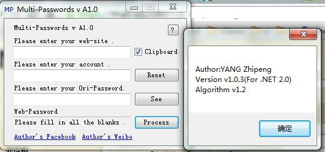

| 姓名 | 杨志鹏 |
|---|---|
| 出生年月 | 1992年11月 |
| 性别 | 男 |
| 学历 | 本科 |
| 专业 | 计算机 |
| 婚姻状况 | 未婚 |
| 联系方式 | +33 695328879 |
| 个人主页 | GitHub |
| 通讯地址 | Résidence Jules Mousseron, C345, Rue du Chemin Vert, 59300, Valenciennes |
| 邮编 | 59300 |
| 外语能力 | 英语、法语、粤语 |
| 工作经历 | 市场研究暑期工，餐馆跑堂、洗碗、洗厨房等 |
| 个人能力 | C++开发 C#开发  以上是C#开发的一个多密码生成器（就是只需填入某个网站名，账号和一个万年不变的密码，就可以很方便的生成一个针对特定网站，每个网站都不一样的密码了。（因为某次我被盗了QQ密码，担心其他账号也会被泄露。所以打算每个网站用不同的密码。但是这样用不同密码记忆难度太大。所以开发了一个针对不同网站生成不同密码的工具）） |
| HTML/CSS JS/PHP MySQL |
项目展示：请参考以下链接GitHub |
| 个人爱好 | 做机器人（高中曾经获得广州市机器人灭火比赛三等奖），做模型，写软件，毛笔书法，硬笔书法（在练田英章的字）等等 |
| 其他情况 | 高中一年级曾获广州市机器人灭火三等奖 |